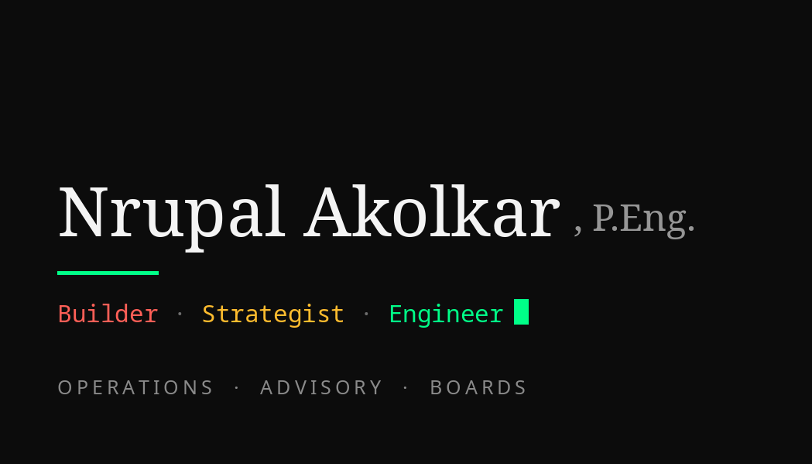
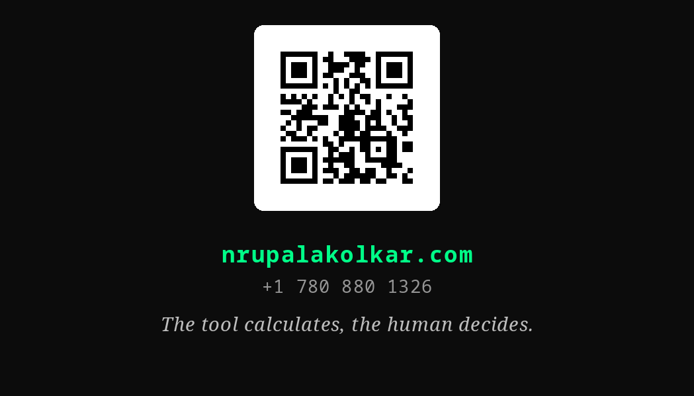

Business Card
Print-ready card, both sides. This page sits behind sign-in because the card carries a personal phone number.
Front

Back

Print PDF — both sides3.5 × 2 in · 300 DPI · bleed + crop marksFront PNGprint file with bleedBack PNGprint file with bleed


Hand the PDF to any print shop as-is. For online printers (Vistaprint, Moo), upload the two print PNGs.